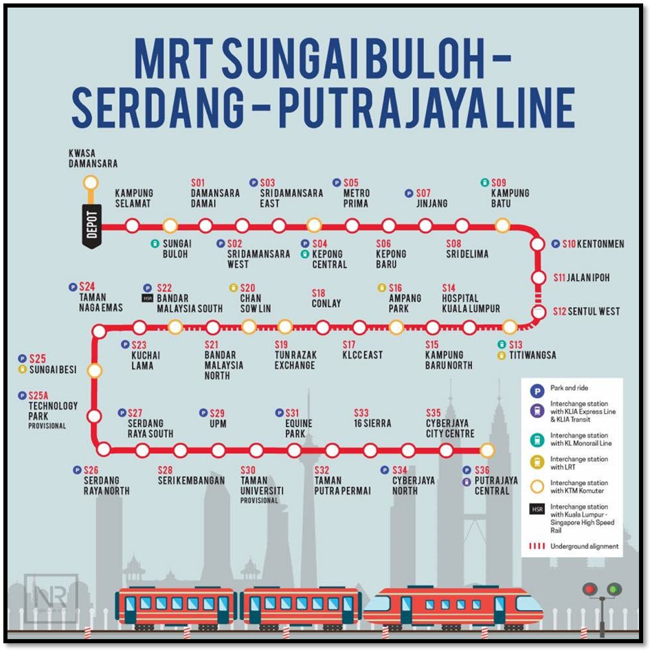
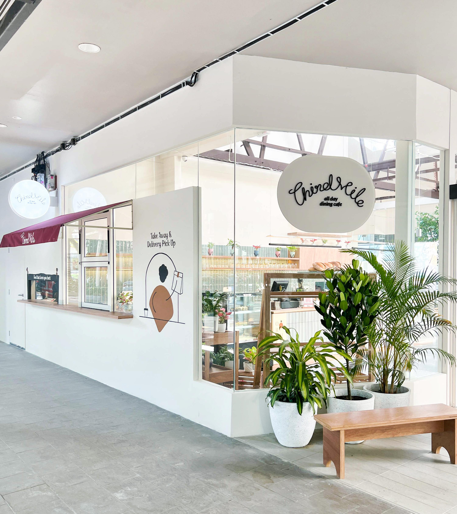
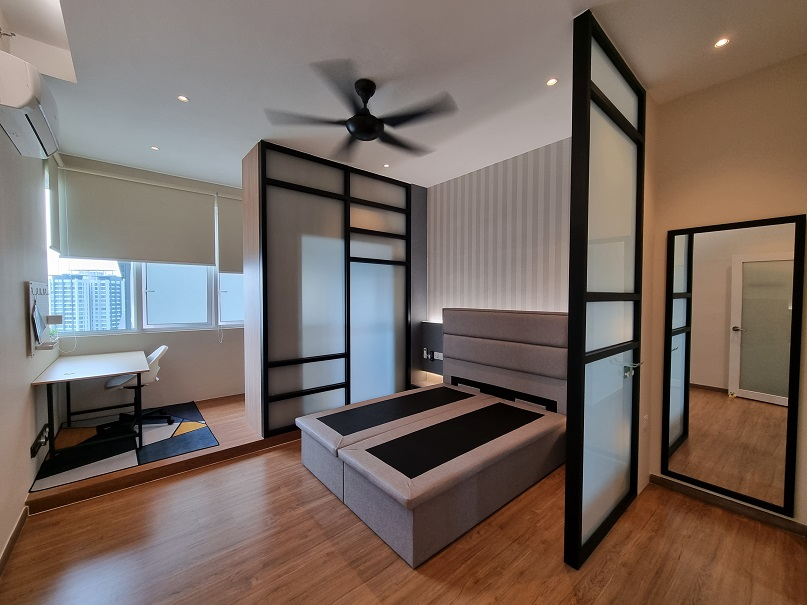

Transport Convenience
Rica residence is strategically located to access all major train transport lines. You can basically easily go anywhere from here via trains. Your main base train station for exploration would be the Sentul West (S12) MRT 2 which is 200 meters (3-minute leisure walk) away. This MRT station is expected to be completed and operational by Jan 2023.

Surrounding Ameneties
To access ameneties via walking distance such as restaurants, banks and convenience stores, walk towards the MRT station. Along the road and further after the MRT station there are numerous eateries, banks, pharmacy and other stores. Also nearby is YTL's "Tiffin at the yard".

Functional Design Suggested Uses
The list below provides a guide on some suggested functional areas which I thought of when designing the space
Important Reminder on Overloading
20-2 focuses on ensuring tenants get full value from enjoying a convenient lifestyle, hence it provides the full range of trusted brands of useful electrical appliances, some of which consume high power due to heating elements. When used at the same time, it may cause the overloading of the electrical infrastructure should the power demands exceeds 10kW.
Hence, please do not switch on any 4 of the high-powered appliances listed below at the same time to ensure the 1 phase electrical panel (fuse box) do not become overloaded and create damage or fire risk.
4 Main Appliances
- Electrolux Dryer Washer
- Sharp Airconditioner 1 & 2
- Rubine Water heater
- Electrolux Convection Oven